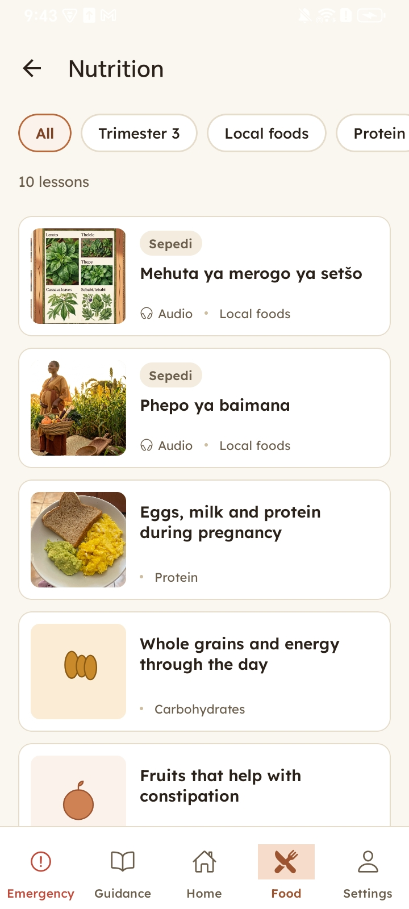

GRAVID-AMEN
What if the best nutrition advice for a pregnant mother in rural Limpopo was already in her pocket?
An offline-first, bilingual (Sepedi and English) Android app for maternal nutrition education, built and tested with the AMEN team at the University of Limpopo. A University of Cape Town Computer Science Honours project, 2026.


Background
Pregnant women in rural Limpopo face high data costs, poor coverage, and a lack of nutrition guidance in Sepedi.
Working with the University of Limpopo AMEN team, we built an offline app for these conditions and tested it against TikTok and YouTube through field tasks and co-design workshops. Finally, we handed over the codebase and findings for a wider pilot, backed by actionable design recommendations.
- High data costs
- Poor coverage
- A lack of nutrition guidance in Sepedi
Objectives
Build a pilot-ready offline app
An Android app that works without a connection, in Sepedi and English.
Test it against TikTok and YouTube
Field tasks and co-design workshops compare the app with the channels people already use.
Hand it over to keep it going
The code, accounts and findings pass to the University of Limpopo AMEN team.
What we built
Mobile app
Works offline, resumes downloads, password-free profiles, Sepedi and English.
Content dashboard
Partner edits and adds lessons, no developer needed.
GitHub Actions
Monitors package deprecation.
How we tested it
Part A: Try each channel
- Attempt five everyday tasks, for example finding a supper recipe
- Complete a 10-question rating scale
- Answer open-ended questions about what helped and what needed improving
Part B: Co-design with cards
- Rank the three channels
- Rank three layouts: folders, search and a swipe feed
- Sort feature cards into "app", "social media" or "both"
- Map how pregnancy information flows in the community
(to be supplied, cleared for publication)
What we found
Trusted, but hard to use alone
Weighted average of participants, from 1 (disagree) to 3 (agree).
Platform preference
It varied by group
Community health workers, family decision-makers and pregnant women each rated the app, YouTube and TikTok differently.
Pregnant women
Preferred the app the least
Of the three groups, pregnant women preferred the app the least.
"The app is able to help me even when I don't have data"
Conclusion
No single channel fits everyone
Different groups preferred different channels.
A trusted, data-free source
The app provides a trusted, data-free source, while social media drives reach.
Make taps obvious
Cards and buttons must look tappable, and icons require local input for proper recognition.
Keep it with someone who can act
An app only lasts when access and warnings remain with someone who can act on them.
Team
Supervisor
A/Prof Melissa Densmore
School of IT, University of Cape Town
Partner
The AMEN team
University of Limpopo